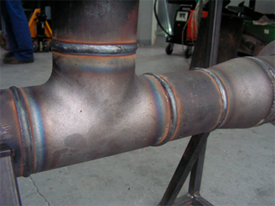

Cтатьи
Технология Орбитальной сварки
Орбитальная сварка.
Orbital Welding – орбитальная сварка. Под этим термином понимается автоматическая дуговая сварка кольцевых швов с помощью специальных сварочных головок или самоходных механизмов. При этом обычно применяют методы GTAW (TIG) или GMAW
GTAW — Gas Tungsten Automatic Welding – автоматическая дуговая сварка неплавящимся электродом в среде инертного защитного газа. Обозначение автоматизированного (роботизированного) применения метода TIG. Может осуществляться как с автоматической подачей присадочной проволоки, так и без нее.
Поскольку в основном обсуждаются достижения в области сварки, может быть полезным описание компонентов стандартной установки для сварки трубопровода и типичной последовательности операций.
В основном трубы поставляются со стандартной заводской фаской 30°. Такую подготовку можно использовать для механизированной сварки, но чаще она модифицируется в в более узкую фаску с помощью мощной машины с гидравлическим приводом для обработки торцев труб. Она устанавливается и центрируется по внутреннему диаметру трубы. Соответствующие резцы устанавливаются на вращающуюся пластину. Довольно часто не представляется возможным полностью обработать торцы трубы; резцы устанавливаются на подпружиненном держателе, который находится „в подвешенном состоянии“ и следует по внутренней поверхности трубы. Это обеспечивает равномерную высоту притупления.
Затем труба подогревается в соответствии с имеющимися предписаниями при помощи газовой горелки или электрических индукционных нагревателей.
Наземный трубопровод.
Сварка по наружному диаметру обычно производится отдельными бригадами сварщиков, каждая из которых заваривает один индивидуальный слой на трубе (либо вручную, либо механизированно).
Сварочная система крепится на направляющем кольце, первая сварочная головка позиционируется на «12 ч». Первый шов варится по часовой стрелке с позиции «12 ч» на «6 ч». Как только первая головка освобождает верхнюю часть трубы, вторая сварочная головка аналогичным образом устанавливается на противоположной стороне трубы, и процесс повторяется. Начало и конец сварного шва шлифуются помощником сварщика для того, чтобы убедиться в наличии полного переплавления области нахлёста двух сегментов сваренного слоя. Как только заваривается первый слой, сварочные головки снимаются с ленты и переносятся к следующему соединению. Этот процесс повторяется до заварки верхнего слоя (рис. 1).

Рис. 2 Труба толщиной 168 мм, 10мм — 37° V –образная подготовкакромки – МАГ –сварка корневого шва, br заполняющиеслои–360°
орбитальная сварка.
Сварочная система крепится на направляющем кольце, первая сварочная головка позиционируется на «12 ч». Первый шов варится по часовой стрелке с позиции «12 ч» на «6 ч». Как только первая головка освобождает верхнюю часть трубы, вторая сварочная головка аналогичным образом устанавливается на противоположной стороне трубы, и процесс повторяется. Начало и конец сварного шва шлифуются помощником сварщика для того, чтобы убедиться в наличии полного переплавления области нахлёста двух сегментов сваренного слоя. Как только заваривается первый слой, сварочные головки снимаются с ленты и переносятся к следующему соединению. Этот процесс повторяется до заварки верхнего слоя (рис. 1).
Стандартный процесс MIG/MAG (GMAW).
Для сварки корня шва методом МИГ/МАГ — сварки в режиме короткого замыкания должна применяться дополнительно одна из следующих технологий :
• Внутренняя зажимная система с медной подкладкой для контроля сварочной ванны и ограничения валика шва по внутреннему диаметру или
• Специальная внутренняя зажимная система со сварочной головкой для заварки корня шва изнутри. В заключении снаружи завариваются «горячий слой» и заполняющие слои (как описано выше).
У системы сварки изнутри есть ряд существенных недостатков. Сварку приходится производить вслепую без возможности коррекции со стороны оператора. Метод MIG/MAG – сварки в режиме короткого замыкания приводит к сравнительно высокой доли дефектов и затратам на ремонт. Кроме того, такое оборудование является дорогостоящим.
Рис. 2 Труба толщиной 168 мм, 10мм — 37° V –образная подготовка
кромки – МАГ –сварка корневого шва, br заполняющиеслои–360°
орбитальная сварка.
Новый метод для сварки корневого/ горячего и заполняющих слоёв
(подробнее в технологии
STT).
Новый метод сварки корня шва снаружи прошел практические испытания. Метод «Переноса силами Поверхностного Натяжения» (STT), разработанный компанией Линкольн Электрик, представляет собой метод сварки в режиме короткого замыкания с высоким уровнем контроля. Развитие технологии высокоскоростных инверторных источников тока и микропроцессоров даёт возможность точно регулировать силу тока на протяжении всего цикла сварки. Уникальным для этого метода является то, что ни ток, ни напряжение не являются постоянными. тот метод применялся как при полуавтоматической, так и при полностью механизированной сварке. Поскольку способ STT позволяет регулировать сварочное напряжение независимо от скорости подачи проволоки, сварщик получает возможность контролировать ввод тепловой энергии и размеры сварочной ванны для обеспечения требуемой глубины провара при полном оплавлении кромок и малом количестве брызг.
10 Июля, 2018
Технология
Орбитальной сварки
В соответствии с требованиями действующей нормативной документации в газовой сфере...
10 Июля, 2018
Технология
Орбитальной сварки
В соответствии с требованиями действующей нормативной документации в газовой сфере...
10 Июля, 2018
Технология
Орбитальной сварки
В соответствии с требованиями действующей нормативной документации в газовой сфере...
10 Июля, 2018
Особенности
неразрушающего контроля
В соответствии с требованиями действующей нормативной документации в газовой сфере...
10 Июля, 2018
Особенности
неразрушающего контроля
В соответствии с требованиями действующей нормативной документации в газовой сфере...